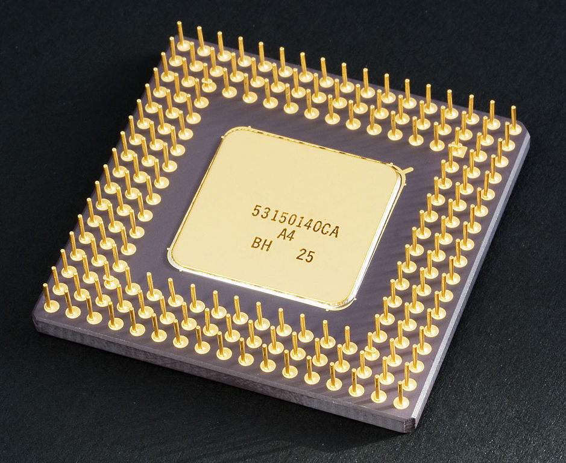

Processadors¶
Els processadors són el "cervell" dels ordinadors, els components que realitzen les operacions emeses pels programes o aplicacions.
Els tipus més comuns de processadors són la CPU i la GPU, tot i que n’hi ha més que s’estudiaran a continuació, com ara TPU, DSP, microcontroladors o FPGA.
Índex de contingut:
Unitat central de processament (CPU)¶
Una CPU o unitat de processament central, també anomenat*microprocessador **, és un component informàtic dedicat a interpretar les instruccions dels programes informàtics. Poden realitzar operacions lògiques, aritmètiques i de moviment de dades.
És el component més complex d’un ordinador. Una CPU d’ordinador personal, el 2022, compta amb 25.000 a 100 mil milions de transistors.
Les CPU més conegudes i usades són actualment les de la Intel Company (i3, i5, i7, i9, xeon) o les de la companyia AMD (Ryzen) per a ordinadors i servidors personals.
Els telèfons intel·ligents, tauletes, televisors i altres dispositius intel·ligents (intel·ligents) utilitzen CPU basat en l’arquitectura de braços (dimensitat, Snapdragon, Kirin, etc.)
{kind=link}

CPU 80486dx Típic dels PC de mitjan anys 90.¶
Coprocessador matemàtic (FPU)¶
El coprocessador matemàtic o la unitat de coma flotant és un tipus de processador especialitzat en realitzar operacions matemàtiques en coma flotant (amb decimals), com ara divisions de multiplicacions, operacions trigonòmiques, lògies i lògies.
En els seus inicis eren circuits separats de la CPU, però avui en dia s’integren al mateix xip de CPU més potent.
Aquest coprocessador o FPU permet accelerar programes que necessiten realitzar moltes operacions matemàtiques, com ara programes de disseny d’ordinadors en dimensions de 2 i 3, programes de full de càlcul o programari científic.
Hi ha coprocessadors especialitzats en operacions matemàtiques orientades a multimèdia (MMX) que acceleren la compressió i la descompressió d’àudio i vídeo. Gràcies a aquests coprocessadors, els programes d’edició o visualització de vídeo poden funcionar ràpidament i sense problemes d’alta definició.
Unitat de processament gràfic (GPU)¶
Una GPU o unitat de processament gràfic és un processador especialitzat, dedicat a calcular gràfics intensament per alleugerir la càrrega del processador central. És capaç de calcular un dibuix molt ràpid en tres dimensions com els antialiasing (suavitzant les vores de les figures) dibuixen triangles, quadrats, el·lipses, etc.
- Targeta gràfica
- La majoria de les CPU actuals ja tenen petites GPU amb una capacitat limitada per gestionar els gràfics. N’hi ha prou de gestionar els programes d’oficina o navegar en línia, però no tenen prou capacitat per gestionar videojocs, programes de disseny, etc. Per això als ordinadors de potència més alta `` targetes gràfiques <https://es.wikipedia.org/wiki/tarjeta_gr%C3%A1Fica> `` especialitzades, que es contenen molt més elèctriques que la CPU i de la pròpia operació per segon.
{kind=link}
Unitat de processament de tensions (TPU)¶
Una TPU o unitat de processament tensorial és un processador dedicat al càlcul intensiu de les operacions de xarxes neuronals, utilitzat en intel·ligència artificial.
El terme TPU és utilitzat per Google per a un circuit inventat per l'empresa, però cada vegada més circuits incorporen capacitats similars per al càlcul de xarxes neuronals, per exemple, en telèfons intel·ligents.
Aquesta unitat TPU accelera processos com el reconeixement facial, el processament de veu o altres operacions basades en la intel·ligència artificial.
Processador de senyal digital (DSP)¶
Un DSP o processador de senyal digital és un processador especialitzat en executar operacions numèriques relacionades amb el tractament del senyal, a una velocitat molt alta.
Les seves aplicacions típiques són el tractament en temps real de l’àudio, la veu, la imatge, el vídeo, etc. Amb aquestes aplicacions, Echo es pot eliminar a les línies de comunicació, fer òrgans d’òrgans en equips de diagnòstic mèdic mitjançant ultrasons o ressonància magnètica més clara, fer ajustaments de ** Tune automàtic al procés de senyal.
Microcontroladors¶
Un microcontroller és un ordinador petit contingut en un sol xip. Incorpora la CPU, la memòria RAM, la memòria ROM Flash i els perifèrics d’entrada/sortida en un espai petit i baix.
Aquests processadors s’utilitzen per controlar els perifèrics com el teclat, el ratolí, la càmera web, el monitor, els discs durs, etc.
Gràcies als microcontroladors, la CPU principal de l’ordinador es descarrega de les tasques de control dels perifèrics, cosa que seria molt car en temps i recursos si hagués de gestionar -los directament.
Una altra aplicació de microcontroladors és automatitzar amb una petita capacitat de càlcul dispositius quotidians com el microones, la rentadora, l’abs d’un cotxe, un pany electrònic, etc.
FPGA¶
Un fpga és un processador basat en portes lògiques programable. Tots els processadors i tots els circuits digitals estan fets de portes lògiques. En el cas de FPGA, aquestes portes lògiques es poden connectar programant, cosa que pot crear un circuit adaptat a les necessitats de l’usuari.
Aquests circuits es poden programar per resoldre tasques especialitzades molt més ràpidament que amb una CPU convencional. Les aplicacions típiques són els sistemes de visió informàtica, la criptomoneda minada, l’emulació de maquinari antic, l’aprenentatge automàtic, els prototips de circuit personalitzats (ASIC), etc.
Quan s’executa en paral·lel, FPGA pot accelerar els càlculs i ser diverses vegades més ràpid que una CPU en operacions com ara la compressió d’àudio i vídeo.
Els idiomes més utilitzats per programar la FPGA són VHDL i Verilog.
Característiques d’un processador¶
A continuació, es presenten les característiques utilitzades per comparar diferents processadors i avaluar el seu rendiment.
- Consum d’energia
El consum d’un processador és cada cop més important.
D'una banda, el consum inferior té un processador, més temps la bateria del dispositiu que el conté durarà.
D'altra banda, als ordinadors connectats a la xarxa elèctrica, com més baix sigui el consum d'electricitat, més baix és el cost de mantenir l'ordinador en funcionament. Aquest consum d’electricitat és tan elevat per als ordinadors d’alt rendiment, que l’electricitat costa anualment més que el preu del propi processador. Aquesta és la raó per la qual es canvien els processadors de servidors abans del final de la seva vida útil. És més barat instal·lar un processador nou més eficient que no pas mantenir el vell funcionament.
El consum d'energia, també anomenat TDP, es mesura en watts. Una CPU típica d’un ordinador personal consumeix uns 100 watts en funcionament normal. Per contra, una CPU típica d’un telèfon intel·ligent consumeix uns 5 watts.
- Freqüència del rellotge
És la freqüència a la qual un processador treballa i determina la quantitat d’instruccions que podeu executar en un segon. Les freqüències típiques dels processadors actuals per a ordinadors personals i telèfons intel·ligents varien de 1000MHz a 4.000MHz. Com més gran sigui la velocitat del rellotge, més ràpid serà un processador, si la resta de paràmetres segueix sent igual.
El overclocking és una tècnica que consisteix a operar un processador a una freqüència superior a la freqüència per a la qual està dissenyat. El overclocking s’utilitza per accelerar el funcionament de l’ordinador i processar informació més ràpida. Molts processadors admeten treballar amb més freqüència que el nominal, però aquesta tècnica comporta un major consum d’energia i la possibilitat de fallades del sistema.
- Nombre de nuclis
Els processadors actuals estan compostos per diversos processadors individuals anomenats nuclis. Com més nuclis tinguin un processador, més operacions es poden realitzar en paral·lel.
Els processadors poden dividir el càlcul d'algunes tasques entre diversos nuclis. Per tant, com més nuclis tingui el processador, més ràpid serà l’execució d’aquestes tasques. D'altra banda, la realització de certes tasques no es pot compartir entre diversos nuclis i la velocitat final no serà major per molts nuclis que el processador té.
El 2022, un processador de mida mitjana per a ordinadors personals sol tenir de 6 a 12 nuclis.
- Nombre de fils d'execució
Els fils d'execució són el nombre de programes diferents que el processador pot executar alhora. En realitat, un processador només pot executar un programa bàsic, però els fils permeten pràcticament doblar el nombre de tasques i accelerar una mica més la velocitat d’execució.
El 2022, un processador Intel típic sol tenir dos fils d'execució bàsics. És a dir, una CPU de 8 core tindrà 16 fils d’execució.
- Memòria de la memòria cau
És una memòria intermèdia que permet accedir a dades i programes més ràpidament quan el processador ha d’accedir repetidament a les mateixes dades de RAM.
Els processadors han de llegir la informació de RAM per realitzar la seva tasca, tant la informació del programa a executar com les dades a processar. La velocitat de transferència de memòria RAM sol ser més lenta que el procés del procés del processador. La memòria de la memòria cau s’utilitza com a memòria intermèdia que emmagatzema el contingut de la memòria RAM que es llegeix repetidament. D’aquesta manera, podeu tenir les dades més ràpidament mentre s’estan processant.
Com més gran sigui la mida de la memòria cau, més gran és la velocitat final del processador.
La majoria de les CPU tenen diversos nivells de memòria cau inclosos. Cada nivell de memòria cau és més lent que l’anterior, però més gran. Normalment es dóna el valor dels més grans. Una CPU típica d’un ordinador personal el 2022 sol tenir una mida de memòria cau d’uns 6 megabytes.
- Nombre de bits
Cada processador pot gestionar al mateix temps un nombre específic de bits. El nombre de bits determina la quantitat de memòria a la qual es pot accedir i la velocitat amb què s’executaran determinades operacions. Un processador de 8 bits tractarà la informació quatre vegades més lent que un dels 32 bits.
Els processadors més simples, com els que incorporen un teclat de l’ordinador o un forn de microones, són de 8 bits.
A sobre d'ells hi ha la CPU de 32 bits, molt més potent i ràpid. Són els que s’utilitzen en telèfons intel·ligents, smartTV, impressores, etc.
Els ordinadors personals actuals utilitzen, en la majoria dels casos, processadors i programari de 64 bits.
- Tipus d’autobusos
És el tipus de comunicació amb la qual es transfereix informació entre el processador i la resta d’elements de l’ordinador. Com més autobusos té un processador i més ràpid, més gran serà el vostre rendiment.
Actualment, els processadors d’ordinadors personals tenen tres autobusos de comunicacions amb l’exterior, per millorar la velocitat de transferència:
- Bus directe amb RAM.
- Bus directe amb ports expressos PCI.
- Bus DMI per connectar -se amb la resta de dispositius (USB, PCI, SATA, Ethernet, etc.).
Proves de rendiment¶
Les proves de rendiment, també anomenades Benchmark, són una tècnica per mesurar el rendiment d'un sistema informàtic o els seus components per separat.
Són evidències molt útils quan es comparen els processadors. A causa de la gran quantitat de paràmetres o característiques que defineixen un processador, no és fàcil calcular el seu rendiment final. Tanmateix, les proves de referència donaran un nombre senzill que representa aproximadament la potència d’un processador.
Les proves clàssiques conegudes són les següents.
- Bips
Els mips o milions d'instruccions per segon.
És una prova molt útil per comparar relativament els processadors al llarg de la història i veure com la potència informàtica creix exponencialment amb el pas del temps. Malgrat tot, és una prova amb certs problemes quan es compara diferents arquitectures, de manera que ha caigut en desús.
Un ordinador personal típic de 2022 té aproximadament 200.000 MIPS.
- Bangeres
Els flops O Operacions de coma flotant per segon, mesura quantes operacions matemàtiques amb decimals és capaç de fer un ordinador. Els múltiples són habituals, per la qual cosa un mflops és igual a un milió d’operacions en coma flotant per segon.
Aquesta mesura és útil per saber com una màquina és ràpida per resoldre problemes científics i càlcul intensiu.
Un ordinador personal típic de 2022 té aproximadament 50.000 mflops.
- Specint i spefp
- Standard Performance Avaluation Corporation (SPEC) <https://es.wikipedia.org/wiki/standard_performance_evaluation_corporation> __ és un consorci sense ànim de lucre que inclou ordinadors venedors, integradors de sistemes, universitats, grups de recerca, grups de publicació i consultors del món. Té dos objectius: crear un punt de referència estàndard per mesurar el rendiment i el control de l’ordinador i publicar els resultats d’aquestes proves <http://www.spec.org/>`__.
Altres proves:
- Passeig
- El "Test Passmark <https://www.cpubenchmark.net/>`__ és una de les proves comercials més conegudes per a ordinadors personals.